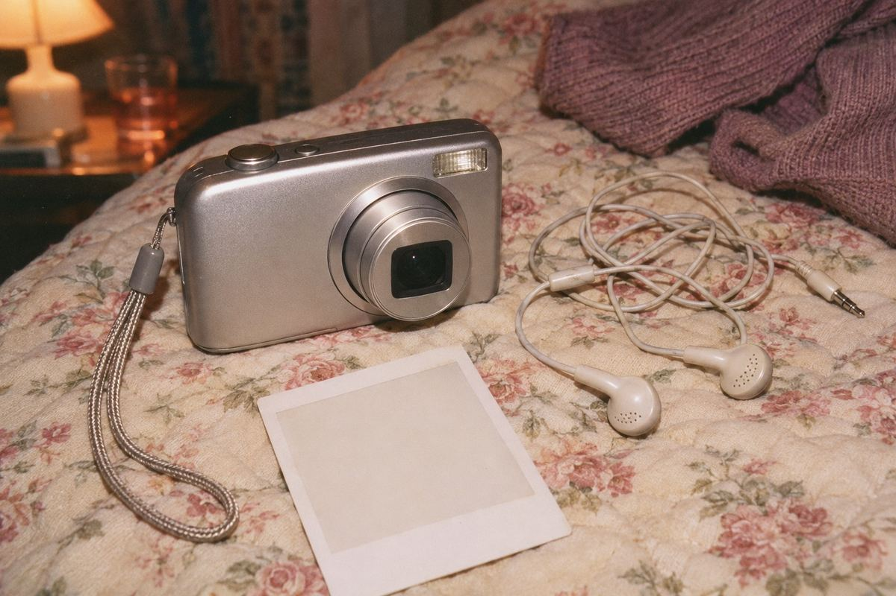
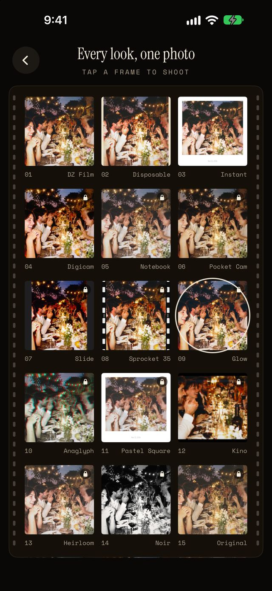

The Digicam Aesthetic: How to Get the Y2K Camera Look
Harsh flash, blown highlights, crunchy noise: three ways to get the early-2000s look.

Short answer: The digicam aesthetic is the look of early-2000s compact digital cameras: harsh direct flash, blown-out highlights, cool or flat color, small-sensor noise, crunchy sharpening and a 4:3 frame, sometimes with a date stamp. You can get it three ways: buy a used compact, shoot with an app that renders a digicam look live, or edit iPhone photos with a simple recipe.
It’s the look of a party photo from a pocket camera: a face lit flat and bright by the flash, the room behind it gone black, the colors slightly off. This guide breaks down what actually creates the digicam aesthetic, why it’s everywhere again, what used cameras cost right now and what to check before you buy one, and how to get the look on an iPhone instead.
What is the digicam aesthetic?
“Digicam” is just short for digital camera, and in this context it means the small, inexpensive point-and-shoots that filled pockets and purses through the 2000s, which is why it also gets called the Y2K camera look. Their photos share a set of technical limits, and each limit is now a style choice:
| Trait | Why old compacts did it | How to fake it on iPhone |
|---|---|---|
| Flat, bright faces and black backgrounds | A tiny flash right beside the lens, with a short reach | Flash on, close range, dark rooms |
| Blown-out highlights | Small sensors with little dynamic range | Raise Highlights instead of lowering them |
| Cool, flat or slightly off color | Auto white balance struggling with flash and mixed light | Lower Warmth for flash shots |
| Blotchy noise, not film grain | Small sensors pushed to high ISO, then smoothed by the camera | A little grain, kept subtle |
| Crunchy edges | Heavy in-camera JPEG sharpening | Raise Sharpness and Definition |
| Purple fringes on bright edges | Cheap zoom lenses (chromatic aberration) | Hard to fake well; let it go |
| A 4:3 frame | The shape of compact camera sensors | Keep your iPhone on 4:3 |
| A date in the corner | An optional date imprint on some models | A camera app with a date stamp |
Notice what’s missing: soft highlight roll-off, warm film color and organic grain. That’s the film look, and it’s a different recipe. If you’re after the disposable version, see our guide to the disposable camera filter on iPhone.

Why the digicam look is popular again
Phone photos are now heavily processed: shadows lifted, skies held back, noise scrubbed away. Next to that, a digicam photo looks unpolished in a way that reads as honest. In NPR’s July 2026 piece “The 2000s called. They want their digital camera back”, people describe the photos as more genuine and the cameras as a way to step away from notifications, and Canon told NPR that sales of its PowerShot point-and-shoots jumped nearly sevenfold from 2022 to 2025.
There’s also a practical reason: the look suits how people share now. A casual set of flash photos from one night makes a natural carousel, which is why digicam sets so often end up as photo dumps. If that’s where yours are headed, our photo dump captions list will save you some thinking.
Digicam vs film vs phone: what’s the difference?
| Early digicam | Disposable film | Modern iPhone | |
|---|---|---|---|
| Highlights | Clip hard to white | Roll off softly | Held back by processing |
| Shadows | Crushed and noisy | Murky and grainy | Lifted and clean |
| Color | Cool under flash, loud in daylight | Warm with a green lean | Accurate and polished |
| Texture | Blotchy noise, sharpened edges | Film grain | Smooth |
| Frame | 4:3 | 3:2 | 4:3, 16:9 or square |
Should you buy a used digital camera for the digicam look?
Buying the real thing is the most authentic route and the most expensive one right now. Here’s what a few popular compacts cost used at MPB, a large used-camera retailer, as of November 2026:
| Camera | Used price at MPB | What it is |
|---|---|---|
| Canon PowerShot S100 | $449 to $474 | A slim pocket compact from the early 2010s |
| Canon PowerShot SX620 HS | $114 to $439 | A zoom compact; price depends heavily on condition |
| Canon PowerShot G7 X Mark III | $1,329 to $1,449 | A newer premium compact, far beyond “cheap digicam” money |
Genuine 2000s models are harder to find at big used retailers. Marketplaces, thrift stores, garage sales and family drawers are where they turn up, and asking prices vary so much that it’s worth comparing recent sold listings before you bid. Don’t pay a premium just because a listing says “CCD”: the flash, the small sensor and the camera’s processing do most of the work.
What to check before you buy
- The battery. Many compacts use a rechargeable pack made for that model (others run on AA batteries), and an original pack from that era may barely hold a charge. Budget for a new compatible battery and charger, and never charge a pack that looks swollen.
- The memory card. Many older cameras only take original SD cards of up to 2GB. Panasonic’s support page on SDHC compatibility explains that SDHC cards can’t be used in those SD-only devices, so check for the SDHC logo on the camera or in its manual. Some models used other formats entirely, such as xD-Picture Card.
- The lens. Turn it on and zoom all the way in and out. A retractable lens that grinds, sticks or shows a lens error is a reason to walk away.
- The flash. It’s most of the look, so make sure it fires.
- The sensor. Shoot a plain wall or the sky and look for spots, lines or dead patches.
- The screen and buttons. Scratches are cosmetic. Dead buttons are not.
- Getting photos off. Plan on a card reader for your computer or phone; old cables and software are a hassle.
How to get the digicam look on iPhone with Filmsera
If you’d rather not carry a second device or chase old batteries, a digicam filter that runs live in a camera app gets you most of the look on the phone you already have. Filmsera, our app, includes a Digicam camera among its 25 looks, and it renders live in the viewfinder, so you see the result as you frame. To be clear about cost: Digicam is not one of the five free cameras, so it needs Filmsera Pro. You can preview sample photos on the Digicam look page first, or see the whole shelf on our vintage film camera page.
A few things that suit this look in particular: the optional date stamp, holding the shutter to record a clip of up to 15 seconds through the same look, and Import from Photos, which develops photos you’ve already taken in a film look (three imports are free, then it’s part of Pro).
Turn the night into a Digicam Diary recap
Filmsera can also make a short 9:16 recap reel set to music from a developed film or a Library album. Digicam Diary is one of its nine recap templates, all free, and cuts snap to the beat on their own. Free exports are 480p with a Filmsera watermark; HD without the watermark needs Filmsera Pro, or a film pass for a recap of that film. You save the reel to Photos or share it through the iOS share sheet. For a longer, hand-edited version, see how to make an event recap video.


Filmsera’s Digicam camera renders live in your viewfinder with Filmsera Pro, and the Digicam Diary recap template is free. Get Filmsera on the App Store
Digicam editing recipe for iPhone photos
No new camera and no app? The Photos app gets surprisingly close, because most of the digicam look is about doing the opposite of a film edit: clipping highlights instead of saving them, crushing blacks instead of lifting them, and sharpening instead of softening. Tap Edit, then Adjust, and start here:
| Setting | Flash at night | Daylight |
|---|---|---|
| Exposure | +10 to +25 | +5 to +15 |
| Brilliance | −20 to −30 | −15 to −25 |
| Highlights | +10 to +20 | +15 to +25 |
| Shadows | −25 to −40 | −10 to −20 |
| Contrast | +15 to +25 | +15 to +20 |
| Black Point | +5 to +15 | +5 to +10 |
| Saturation | −5 to −10 | +10 to +20 |
| Warmth | −10 to −25 | 0 to −10 |
| Sharpness | +30 to +50 | +30 to +50 |
| Definition | +10 to +20 | +10 to +20 |
| Noise Reduction, Vignette | 0 | 0 |
Three finishing touches make it convincing. Crop to 4:3 if the photo isn’t already. Add a small amount of grain in a free editor such as Snapseed as a stand-in for sensor noise; real digicam noise was blotchier than film grain, so keep it low. And if you want a date stamp, use the real date. Positive Black Point is the key difference from a film edit: it deepens the blacks, where a film recipe lifts them, which our guide to making photos look like film on iPhone covers.
How to shoot for the digicam look
- Flash on, every time. Set it to On with the control above the frame. Night, daytime, indoors: the flash is the look.
- Get close. Small flashes don’t reach far, so stay within a few steps and let the background fall into darkness.
- Pick places with dark backgrounds. Diners, cars, backyards after dark and hallways turn into that black void behind bright faces.
- Shoot at arm’s length. Flip the phone around and use the back camera for group selfies, the way people did with no screen facing them. Expect to cut off a head or two.
- Try the flash mirror selfie. The bright starburst where the flash hits the mirror is part of the charm.
- Keep everything in focus. Small-sensor compacts had very little background blur, so skip Portrait mode.
- Shoot sequences. Three frames of the same silly moment, slightly different each time, is exactly how a 2000s memory card looked.
FAQ
What is a digicam?
Digicam is short for digital camera. In conversations about the aesthetic, it usually means the small, inexpensive point-and-shoot cameras that were everywhere in the 2000s, before phones replaced them. Their small sensors, tiny built-in flashes and heavy in-camera processing gave photos a recognizable look: bright flat faces, black backgrounds, clipped highlights and noisy, sharpened detail.
Are old digital cameras worth buying for the digicam look?
They can be, if the price is right and the camera works. Popular models have become expensive: as of November 2026, MPB lists a used Canon PowerShot S100 at $449 to $474. Check the battery, memory card format, lens and flash before paying. If you mostly want the look, an app or an editing recipe on your iPhone costs far less.
What memory card does an old digital camera need?
Many cameras from the mid-2000s and earlier take original SD cards of up to 2GB and can’t use SDHC cards. Look for the SDHC logo on the camera or in its manual before buying larger cards. Some brands used their own formats, such as xD-Picture Card, so check the card slot or the model’s specs before you buy.
Can I get the digicam aesthetic on iPhone for free?
Yes. Shoot with the flash set to On, then edit in the Photos app: raise Highlights, Contrast, Black Point and Sharpness, lower Shadows, and cool the Warmth for flash shots. Crop to 4:3 and add light grain in a free editor such as Snapseed. A live Digicam look in an app like Filmsera is quicker, but that one is a paid feature.
What is the difference between the digicam look and the disposable camera look?
Both rely on harsh flash and dark backgrounds, but they fail differently. Digicam photos clip highlights to white, crush shadows into noise, run cool under flash and look crunchy from in-camera sharpening, in a 4:3 frame. Disposable film rolls highlights off softly, keeps murky grainy shadows, leans warm and green, and comes in a 3:2 frame with organic grain.
Written by the Filmsera team
Filmsera is a shared disposable camera app for iPhone: create a film for your event, let guests join by QR code from the app or their phone's browser, and open the whole roll together at the reveal. Download on the App Store →
Photos in this article are illustrations created for Filmsera, not customer photos. App screenshots are from Filmsera on iPhone.